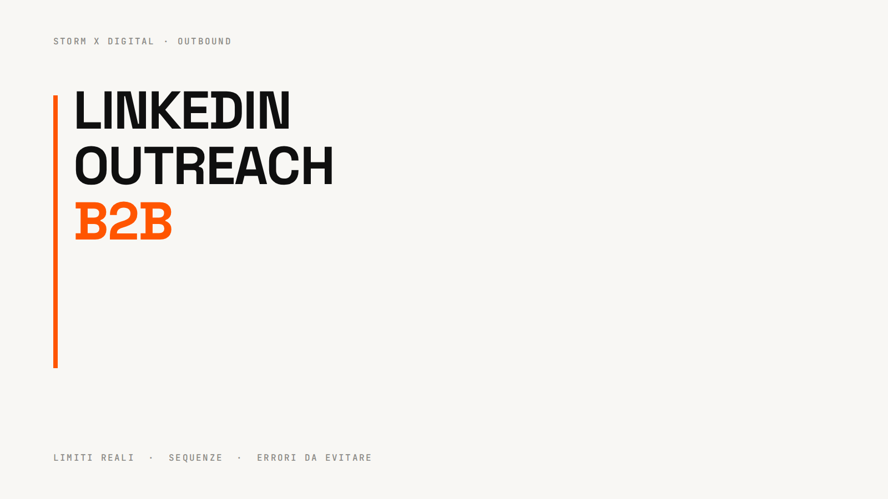
LinkedIn outreach B2B: come farlo davvero
Limiti reali di connessione, perché LinkedIn ed email non vanno nella stessa sequenza automatica, e come scrivere messaggi che ottengono risposta.
→ LEGGI L'ARTICOLOARTICOLI · NOTE DAL FIELD
Niente "10 trucchi che ti svolteranno la vita". Solo note pratiche di chi i sistemi outbound li costruisce e li manda in produzione tutti i giorni. Pubblicati quando c'è qualcosa che vale la pena scrivere.

Limiti reali di connessione, perché LinkedIn ed email non vanno nella stessa sequenza automatica, e come scrivere messaggi che ottengono risposta.
→ LEGGI L'ARTICOLO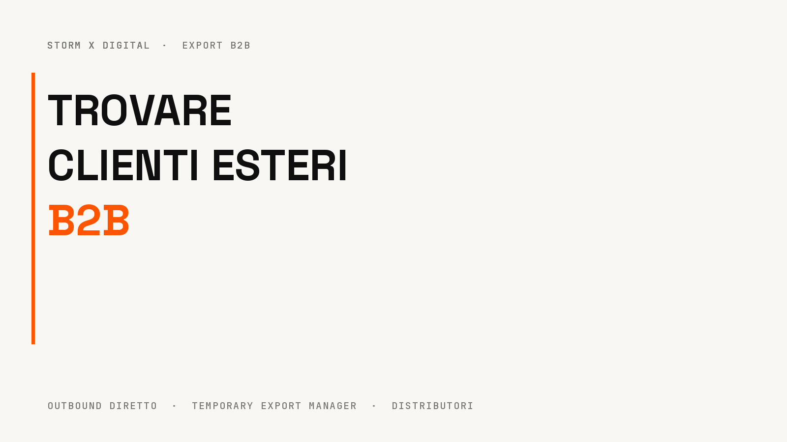
Fiere, distributori, temporary export manager e outbound diretto a confronto: costi reali, tempi e due casi verificati per vendere all'estero.
→ LEGGI L'ARTICOLO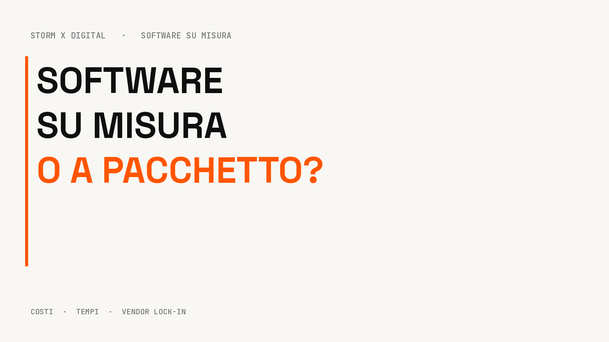
Gestionale su misura o a pacchetto: come si decide, quanto costa nel 2026 e il vendor lock-in che nessuno ti spiega prima di firmare.
→ LEGGI L'ARTICOLO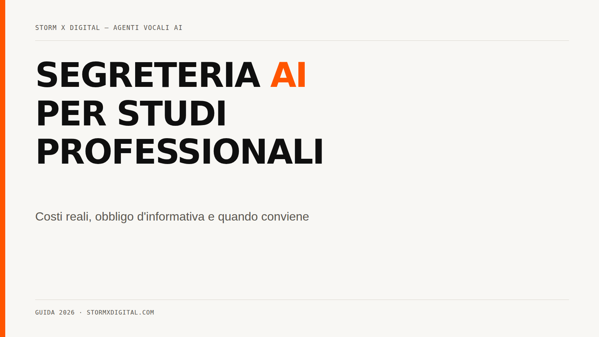
Costi reali per medici, dentisti, avvocati e commercialisti, l'obbligo di informativa della Legge 132/2025 e quando conviene rispetto a una segretaria umana.
→ LEGGI L'ARTICOLO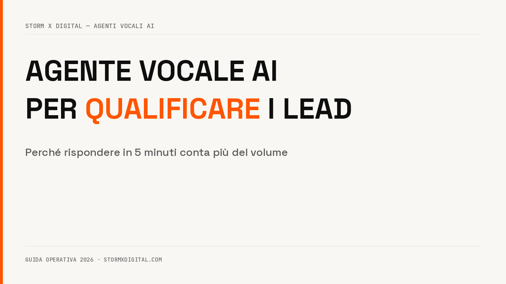
Perché rispondere in 5 minuti conta più del volume di lead: script di qualificazione BANT, costi reali e quando un agente vocale AI non conviene.
→ LEGGI L'ARTICOLO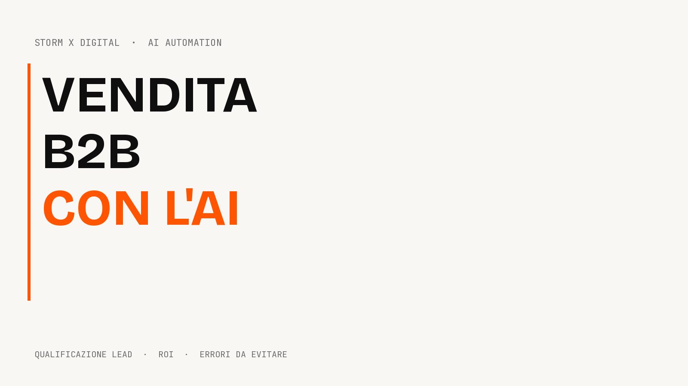
Dove l'AI si ripaga per prima nel processo commerciale, quanto costa davvero e perché — nella maggior parte dei casi — non sostituisce chi vende.
→ LEGGI L'ARTICOLO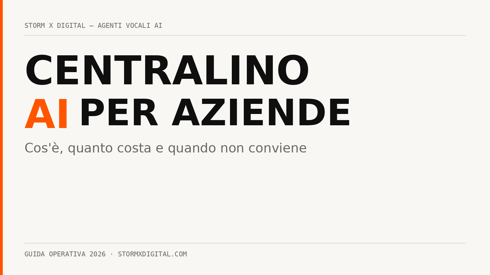
Cos'è davvero un centralino AI, quanto costa rispetto a centralino virtuale o receptionist umana, come si integra col CRM — e quando non conviene adottarlo.
→ LEGGI L'ARTICOLO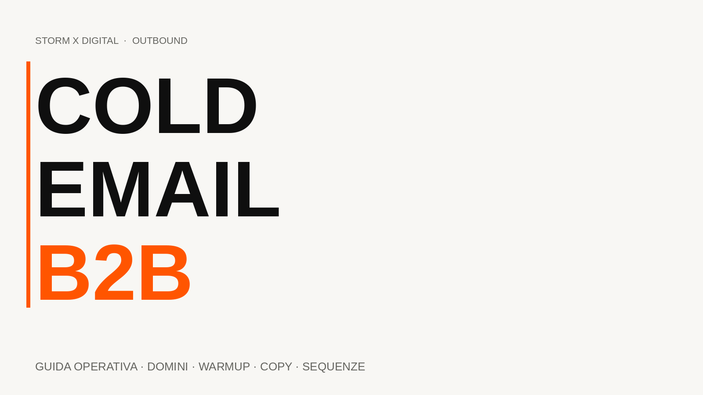
L'infrastruttura che il 90% sbaglia prima ancora di scrivere un'email, il copy che ottiene risposta e la sequenza multicanale che raddoppia il reply rate. Note dal campo.
→ LEGGI L'ARTICOLO
Outbound multicanale e AI per l'export ortofrutta di Profood: oltre €345.000 di ordini e 74 ordini con riordini ricorrenti su 4 buyer esteri — senza team commerciale interno.
→ LEGGI IL CASE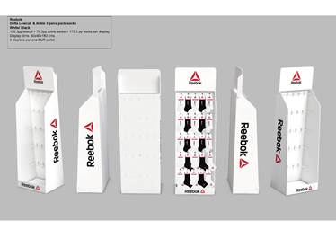
Outbound multicanale ed export manager frazionato per la licenziataria Reebok Socks EMEA: €2,5M di pipeline, €900K di vendite e 10 retailer — senza assunzioni commerciali locali.
→ LEGGI IL CASE
Come abbiamo portato un brand di giocattoli da zero a oltre €40.000 di fatturato mensile su Amazon Italia, Germania e Francia — ROAS 6,65×, €51.500 in 3 mesi.
→ LEGGI IL CASEGeneri liste e contatti ma gli appuntamenti non arrivano? Spesso il problema non è la lead generation, ma chi e come fa il follow-up commerciale.
→ LEGGI L'ARTICOLO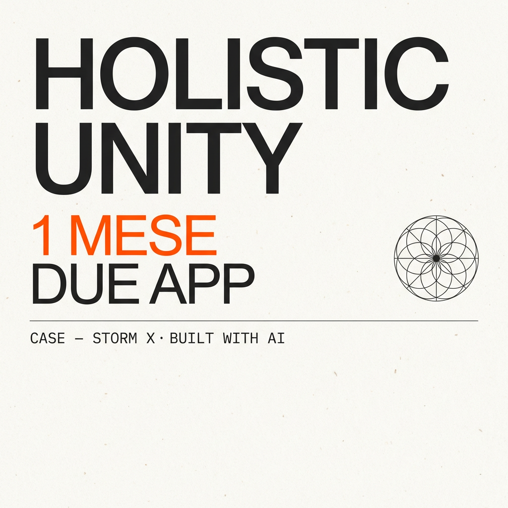
Come abbiamo costruito in un mese app iOS clienti + WebApp terapisti per Holistic Unity, e perché ora gestiamo entrambi i lati: outreach multicanale per i terapisti, ads + SEO per i clienti.
→ LEGGI IL CASE
Differenza tra contatto, prospect e MQL/SQL. Quanto costa davvero un nuovo cliente nel 2026, settore per settore. Numeri presi dalle nostre campagne, non da report.
→ LEGGI L'ARTICOLO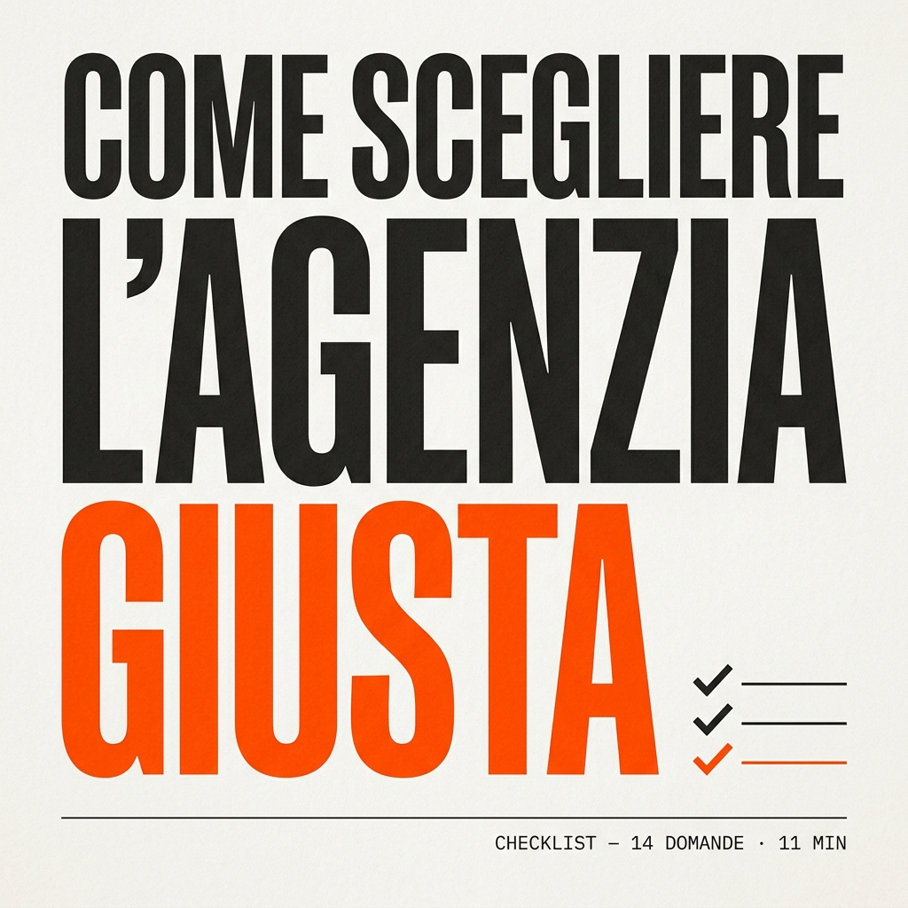
14 domande da fare prima di firmare. 7 segnali da cui scappare. 3 modelli di prezzo accettabili e quelli da evitare. Niente filtri.
→ LEGGI L'ARTICOLO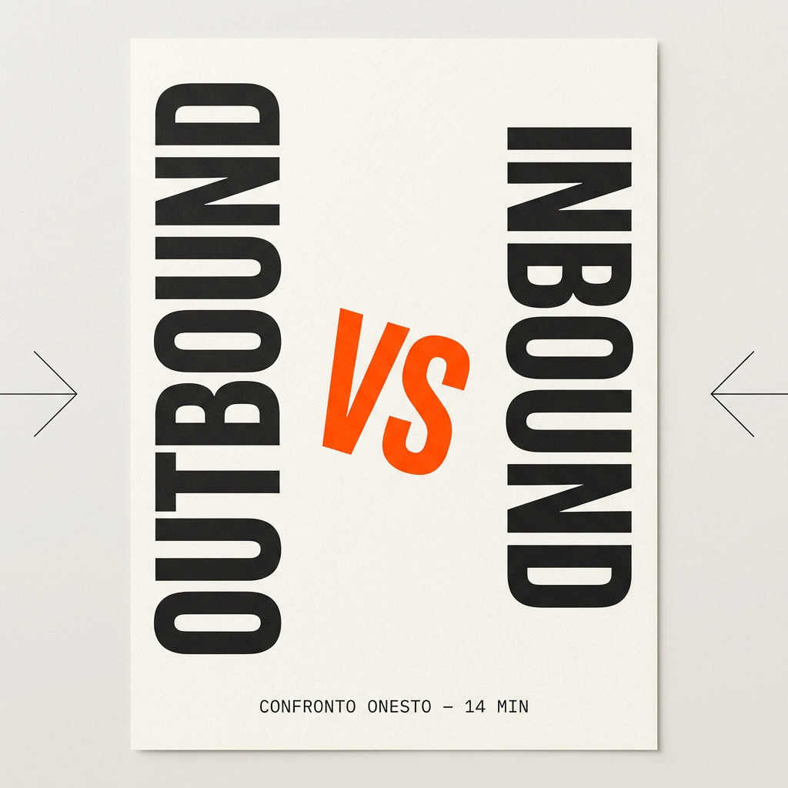
Cos'è l'outbound marketing, quando conviene rispetto all'inbound e perché spesso "non funziona" nel B2B. Confronto onesto, numeri dal campo.
→ LEGGI L'ARTICOLO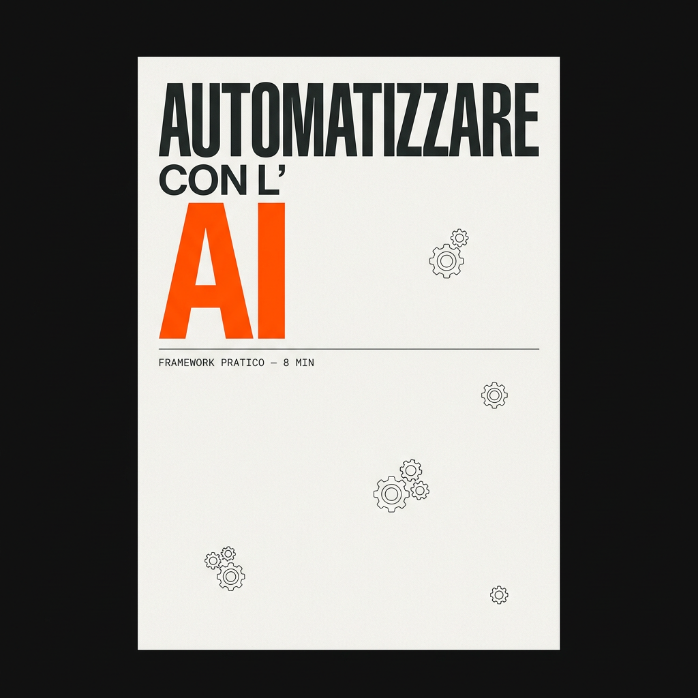
Framework operativo per identificare quali processi automatizzare per primi, calcolare il ROI atteso, evitare gli errori che vediamo più spesso fare alle PMI italiane.
→ LEGGI L'ARTICOLO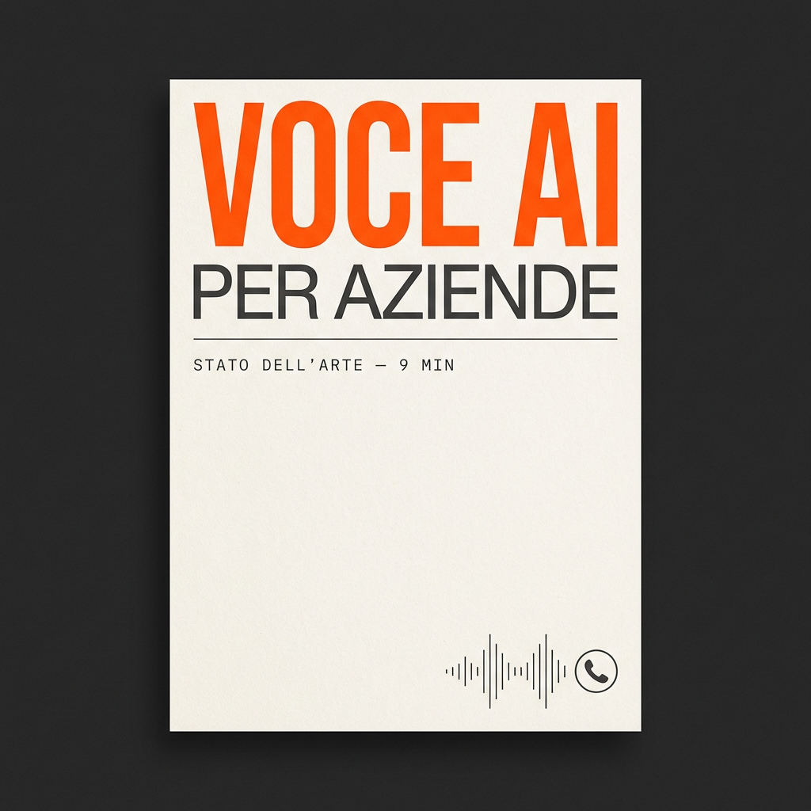
Latenza, qualità voce, costo per minuto, integrazione CRM. Confronto onesto tra Vapi, Retell, Bland e quello che usiamo noi davvero in produzione.
→ LEGGI L'ARTICOLO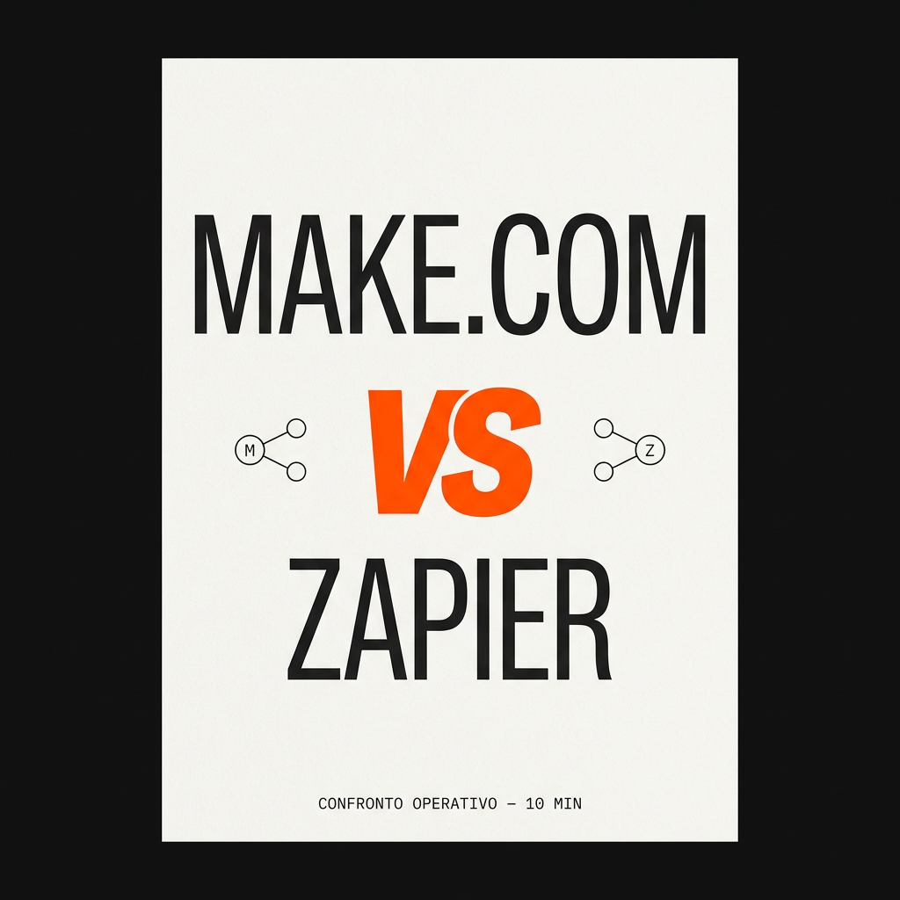
Abbiamo migrato 47 scenari da Zapier a Make.com nell'ultimo anno. Cosa abbiamo imparato: prezzi reali, performance, edge cases, dove uno fa schifo e l'altro brilla.
→ LEGGI L'ARTICOLOPubblichiamo solo quello che vorremmo aver letto tre anni fa.
NEWSLETTER
Una email ogni 1-2 settimane. Solo quando c'è qualcosa che vale. Disiscrizione con un click. Niente popup invadenti.